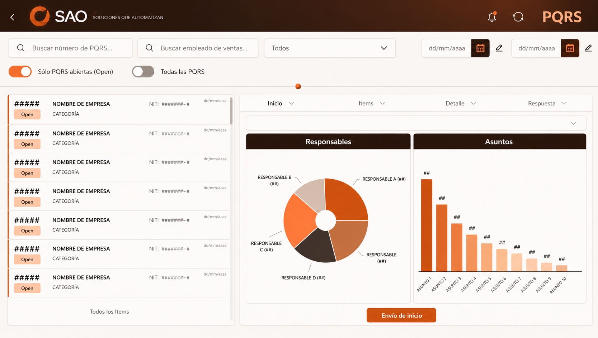
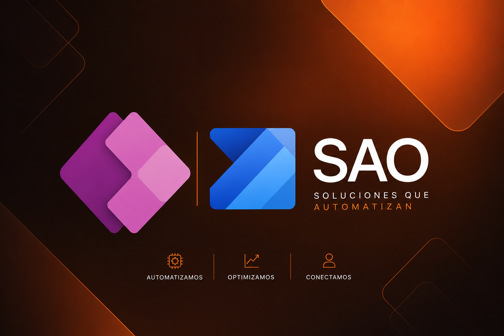
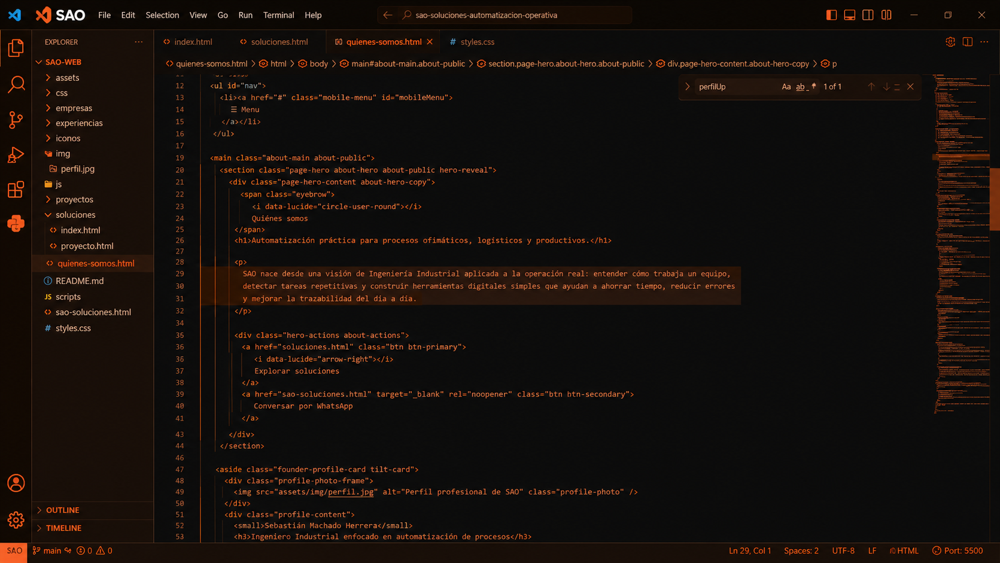

Operación logística
Transformación de información operativa en tableros, indicadores y control visual para inventarios, productividad, ventas, mercadeo y seguimiento de CEDI.
Soy Ingeniero Industrial enfocado en automatización de procesos ofimáticos y productivos. He trabajado con análisis logístico, CEDI, tableros de control, soporte IT, flujos automáticos, aplicaciones internas y plataformas web ligeras para convertir tareas repetitivas en soluciones simples, medibles y útiles.
Transformación de información operativa en tableros, indicadores y control visual para inventarios, productividad, ventas, mercadeo y seguimiento de CEDI.
Construcción de apps, flujos, correos automáticos, trazabilidad, generación de guías, aprobaciones y seguimiento entre áreas.
Desarrollo de páginas, catálogos, formularios, diagnósticos y herramientas interactivas publicables sin infraestructura costosa.
Estas líneas reúnen experiencia práctica en logística, operación, datos, Power Platform y desarrollo web. El objetivo es tomar procesos reales, entenderlos, ordenarlos y convertirlos en herramientas que ayuden a trabajar mejor.

Creación de tableros para convertir archivos, consultas y reportes manuales en indicadores visuales. Este enfoque permite entender inventarios, ventas, productividad, campañas, desempeño logístico y comportamiento operativo.

Desarrollo de aplicaciones y automatizaciones para ordenar tareas entre áreas: captura de información, aprobaciones, estados, alertas, correos, documentos, guías y trazabilidad del proceso.

Construcción de páginas y herramientas interactivas para presentar servicios, capturar necesidades, guiar diagnósticos, mostrar catálogos, generar solicitudes y conectar al usuario con una solución concreta.
Revisamos la forma actual de trabajo, detectamos tareas repetitivas y proponemos una solución concreta: tablero, aplicación interna, flujo automático, catálogo, formulario o plataforma web.